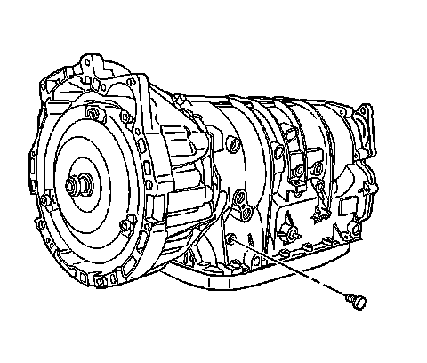

5L40-E/5L50-E - Automatic Transmission
Automatic Transmission Fluid Pressure Test Hole Plug Replacement
Removal Procedure
1. Raise and support the vehicle. Refer to Lifting and Jacking the Vehicle (Service and Repair) .

2. Remove and discard the oil pressure test plug.
Installation Procedure
Notice: Refer to Fastener Notice (Fastener Notice) .
1. Install a NEW oil pressure test plug.
Tighten the oil pressure test plug to 11 N.m (97 lb in).
2. Check the transmission fluid level (fill if necessary). Refer to Transmission Fluid Check (Transmission Fluid Check) .
3. Lower the vehicle.